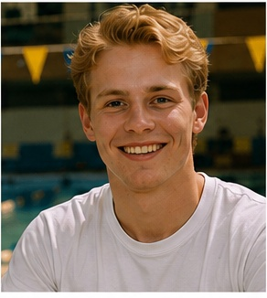

Thomas GREEN
Je fais parti du Hall Lambda.
J'accompagne les nouveaux étudiants lors de leur arrivée à Saint Franck.
J'organise les réunions d'accueil et aide les élèves à prendre leurs marques sur le campus.
Je peux paraitre froid au premier abord, mais je reste accessible pour tous les étudiants de première année.